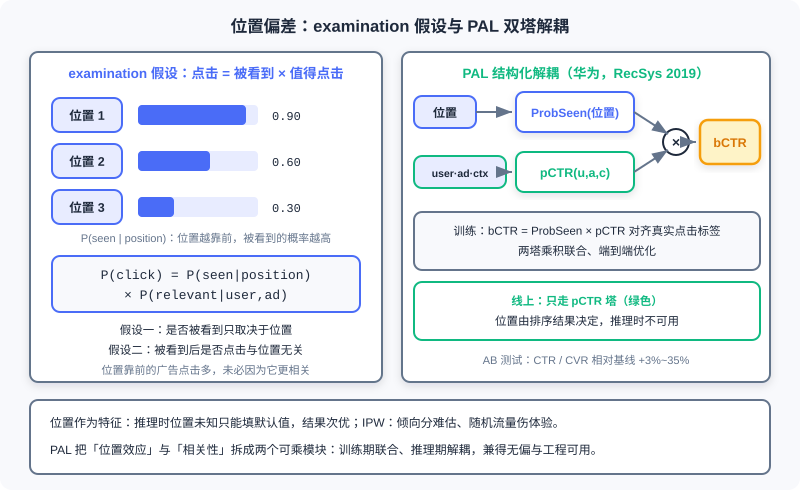

广告系统中的偏差与校准
📝 Before You Continue: 本章需先读 12.2（eCPM 与 CTR 预估——预测值如何进入排序算术）与 12.4（智能出价——出价栈如何逐层消费 pCTR/pCVR 预测值）。本章与 Part 3 的排序模型直接衔接：同样的模型结构，在推荐里可以只当「排序键」用，在广告里必须当「概率」用——这一字之差引出本章的全部内容。
假设你训练了一个 AUC 0.80 的 CTR 模型，放在推荐系统里，这是足以自豪的成绩。现在把它原封不动搬进广告系统，会发生什么？很可能是一场事故：模型对每个广告的预估都系统性高出真实值一倍，候选之间的相对顺序完美保持（AUC 不变），但每一次 eCPM 计算、每一次出价换算、每一张账单都错了。推荐系统惩罚「排错序」，广告系统额外惩罚「报错数」——而后者在模型论文的评估表格里几乎没有席位。
本章是 Part 12 测量系统的核心章，讨论的是每天都在工业界以真金白银发生的主题： 偏差（Bias）与校准（Calibration）。前面几章里，12.2 建立了 eCPM 这把尺子，12.3 设计了竞价机制，12.4 让平台代广告主出价——所有这些机制消费的都是模型的预测值。预测值本身准不准、系统性的偏差从哪里来、如何测量与修正，就是本章要搭建的「测量系统」。测量是机制与出价的地基。
读完本章，你将能够：
- 区分 校准（Calibration） 与 判别力（Discrimination） ，解释为何高 AUC 的模型可能给出完全不能用的 eCPM
- 用 examination 假设分解 位置偏差（Position Bias） ，对比「位置作特征 / IPW / PAL」三类去偏方案的适用与代价
- 定义 样本选择偏差（SSB） 与数据稀疏，写出 ESMM 的全空间建模目标与损失，说明 CVR 塔为何是「隐式学习」
- 描述 胜出偏差 与 延迟反馈 如何污染训练与校准标签，以及探索流量为何是无偏信号的来源
- 用 Platt scaling 与保序回归（PAVA）在独立验证集上做校准，用可靠性图、ECE、PCOC 评估校准质量
- 完成 5 道分层练习题，打通从 ECE 手算到 PAVA 拟合的完整链路
12.5.0 广告预测为什么比推荐更苛刻：从相对序到绝对值
推荐系统排序阶段的评估是「宽容」的。排序只关心候选之间的相对顺序：把所有分数平方、取对数、乘以任意正常数，排序结果与 AUC 纹丝不动——AUC 对分数的 单调变换不变。正因如此，推荐模型可以采用各种「只保序、不保值」的结构与损失（双塔内积、pairwise 排序损失等），只要序对，业务指标就对。你在 Part 3 见过的大多数排序模型，都建立在这条「相对序就够用」的假设上。
广告系统打破了这个安全区。按转化出价的场景（OCPC/CPA，见 12.4）下，平台的排序算术是：
pCTR、pCVR 的 绝对值 直接参与乘法（AdaCalib，Wei et al., SIGIR 2022 对这一模式的总结）。12.4 的智能出价栈更进一步：目标转化成本约束、预算 pacing、ROI 优化器，每一层都在对这些预测值做算术。预测值每偏一分，钱就算错一分——这里的「错」不是隐喻，是账单上可以直接核对的差额。
更麻烦的是，乘法会放大偏差。pCTR 高估 10%、pCVR 高估 10%，看似各自「还行」，乘积却高估 21%（）。一条出价链上串着多个 AUC 都不错的模型，链路末端的校准偏差仍可能大得离谱——这就是多分数相乘模式的宿命： 判别力的优秀掩盖不了校准的失真，反而把它层层放大。
由此必须严格区分两个正交的概念。判别力（Discrimination） ：模型能否把正例排在负例前面，由 AUC 类指标度量。校准（Calibration） ：模型打 0.7 分的那组样本，是否真的约有 70% 为正——预测的绝对值是否可信。二者互不保证：Guo et al.（2017）的系统研究发现，现代深度模型普遍 过度自信（Overconfidence）——判别力提升的同时，预测值系统性偏离真实概率。AUC 0.80 但整体估值翻倍的模型，就是「排序完美、计费灾难」的典型。
失准的后果沿 12.4 的出价栈逐级传导： 出价错 （OCPC 用失真的 pCVR 换算出错误 bid）→ 排序错 （eCPM 尺子失真，好广告落榜、差广告上位）→ 计费错 （GSP 按失真的 pCTR 折算支付，见 12.3）→ 预算预测错 （pacing 的花速预估全部失真）。阿里妈妈的工程实践把这总结得很直白：AUC 只衡量排序质量、忽略预测值的绝对大小；而 绝对精度（size-accuracy） 对精确出价、竞价稳定、混投公平性至关重要——过度预估或不足预估，都会给平台或广告主造成直接的收入损失。
🧠 Mental Model: 摸额头与体温计
推荐排序像用手摸额头：你只需要判断「比平时热」，相对比较就足够下「要不要休息」的结论。广告系统像给病人开药：剂量按 38.5°C 这个绝对数字计算，高估一度药量就翻倍。同一套「温度感知」，推荐只需给出序，广告必须给出数——本章的全部内容，就是把「摸额头的模型」改造成「体温计」的工程学。
Analysis: 判断你的场景需要判别力还是校准，看预测值是否进入算术：只用于排序（召回、推荐精排）→ 判别力优先；用于出价、计费、预算控制、ROI 结算（广告、LTV 建模）→ 校准是一等公民。工业广告系统通常两头都要：先用判别力强的主干模型保序，再叠加独立的校准模块保真——这正是 12.5.4 的主题。
12.5.1 位置偏差：点击 = 被看到 × 值得点击
先看最古老也最顽固的一种偏差。位置 1 的广告点击率天然高于位置 5，其中相当一部分与「广告好不好」无关，只与「位置好不好」有关。麻烦在于训练数据来自「按当前策略排好序」的日志：好位置给了系统认为好的广告，于是「位置效应」与「广告质量」在日志里纠缠不清，模型会把位置红利误记为广告自身的功劳。这就是 位置偏差（Position Bias）。
主流方法把它形式化为 检验假设（Examination Hypothesis，也称浏览假设） ：
一句话： 点击 = 被看到 × 值得点击。它附带两个隐含假设：是否被看到只与位置有关；被看到之后是否点击与位置无关。前者把「曝光的可见性」抽成位置的函数，后者把「用户的兴趣判断」留给广告本身——偏差治理的全部方案，都是围绕怎么把这两项拆开。
方案一：位置作为特征。 工业界使用最广的做法：把位置编号作为特征喂给模型，靠数据自己学。问题出在推理时刻——位置恰恰是排序的 输出 而非输入，打分时广告还没被分配位置，只能填一个默认值（比如「第一名」或「平均位置」）。不同默认值导出不同结果，效果次优（Guo et al., RecSys 2019 对这一困境的分析）。胜在实现成本几乎为零，很多系统「明知次优仍在用」。
方案二：逆倾向加权。 逆倾向加权（Inverse Propensity Weighting, IPW） 对不同位置的样本按倾向分的倒数加权：位置靠后、天然倾向低的样本权重高，加权后还原「无位置偏爱的虚拟分布」。理论优雅，难点在 倾向分（Propensity Score） 的估计——要估准就得跑随机展示流量（把广告随机放到各位置），而随机流量伤害用户体验与收入。学术界研究丰富，工业落地则慎之又慎。
方案三：PAL 结构化解耦。 华为提出的 PAL（position-bias-aware learning） （Guo et al., RecSys 2019）直接按 examination 假设把模型拆成两个可乘模块：
训练时两塔 联合 优化：乘积 bCTR 与真实点击标签计算损失、端到端更新；线上只用 pCTR 塔——位置信息止步于训练期，ProbSeen 塔仅承担分解职责。这样 pCTR 塔学到的就是「剥离位置效应后的广告质量概率」。华为的 AB 测试显示 CTR 与 CVR 相对基线提升 +3%~35%。

左图是 examination 假设：位置决定「被看到」的概率，被看到之后才轮到「值得点击」发挥作用；右图是 PAL 的双塔结构——训练期 ProbSeen 与 pCTR 相乘对齐点击标签，线上只走 pCTR 塔，位置由排序结果决定、不能作为输入。
| 方案 | 思路 | 优点 | 代价 / 风险 |
|---|---|---|---|
| 位置作为特征 | 位置进模型，靠数据学 | 实现最简单，工业最广 | 推理时位置未知，默认值困境，次优 |
| IPW | 按倾向分倒数加权样本 | 理论无偏性清晰 | 倾向分难估；随机流量伤体验 |
| PAL | ProbSeen × pCTR 双塔解耦 | 联合训练、线上只走 pCTR 塔 | 依赖 examination 假设成立 |
最后补一类更精细的建模。级联模型（Cascade Model） 放弃「各位置独立」的假设：用户从前往后顺序浏览，点击即停止，每次会话至多一次点击；某个位置被查看的概率与它前面位置展示的内容相关——前面被点走了，后面的请求根本不会发出。examination 假设可以看作级联模型的「各位置独立、与内容无关」简化版；级联建模更贴近搜索页的真实浏览行为，代价是模型与数据处理的复杂度。
Analysis: 位置偏差若不处理，会直接污染校准：模型学到的是「带位置先验的条件点击概率」，而线上出价需要的是「无位置条件的广告质量概率」。二者的差距就是校准曲线上的系统性偏移。记住这个伏笔——12.5.4 的结论「先去偏、再校准」正源于此。
12.5.2 样本选择偏差与 ESMM：训练空间 ≠ 推理空间
第二类偏差藏在 CVR 模型的训练流程里。传统 CVR 模型用 点击样本 训练——转化标签只能在点击之后产生，天经地义。但推理时呢？eCPM 公式里 pCVR 挂在 每一次曝光 上，模型必须对全部曝光打分。于是 训练空间（点击空间）成了推理空间（曝光空间）的真子集 ，两个分布不一致——这就是 样本选择偏差（Sample Selection Bias, SSB） ：你在一个被「用户点了」这个事件筛选过的子空间里学规律，却要把规律外推到全空间。
与 SSB 结伴而来的是 数据稀疏（Data Sparsity, DS）。点击本身就是小概率事件：淘宝公开数据集里，点击样本仅占全部曝光的 约 4% ；转化又建立在点击之上，稀上加稀。CVR 模型的训练样本量比 CTR 低一到三个数量级，直接训练极易过拟合。SSB 让模型学偏，DS 让模型学不稳——ESMM 就是同时对付这两兄弟的设计。
ESMM（Entire Space Multi-task Model，全空间多任务模型） （Ma et al., 阿里，SIGIR 2018）的出发点是行为序列的链式法则：
关键观察：pCTR（曝光 → 点击）与 pCTCVR（曝光 → 转化）都定义在 全曝光空间 ，点击与转化标签在每一次曝光上都可以监督（点了没/转化了没）。于是用两个「全员可算」的量，把只能在点击子空间定义的 pCVR「夹」出来——训练直接发生在推理空间里，SSB 从结构上消失。

底层是全部曝光样本上的共享 Embedding，向上分出 CTR 塔与 CVR 塔，两塔输出相乘得到 pCTCVR；两个损失（L_ctr 对点击标签、L_ctcvr 对转化标签）都在全曝光空间计算——训练空间与推理空间重合，SSB 被绕开。
架构上有三个值得咀嚼的细节。其一，双塔共享 Embedding ：CVR 塔从海量 CTR 样本迁移特征表示，稀疏问题 DS 直接受益。其二，用乘法而不是除法 ：若按 显式相除，pCTR 很小时（点击本就是小概率）数值会爆炸，且商不保证落在 ；乘法形式天然规避这两个坑。其三，损失结构 ：
其中 是全曝光空间， 是点击标签、 是转化标签，、 分别是 pCTR 与 pCVR。注意损失里 没有 CVR 的直接监督项——pCVR 是中间变量，被 隐式学习 ：CVR 塔的参数仅由 经由乘积回传的梯度更新，而 CTR 塔与共享 Embedding 由两项共同更新。
效果如何？公开数据集上，CVR 任务 AUC 绝对提升 2.56%——要知道工业界 CTR/CVR 模型 0.1% 的提升已算显著，2.56% 是罕见的量级；生产数据集规模达 89 亿样本。更难得的是稳健性：随训练集缩小（采样率下降），ESMM 性能保持稳定，优于过采样与 UNBIAS 等基线——共享 Embedding 的迁移让它在数据越稀疏时越显价值。
🧠 Mental Model: 先笔试后面试
「面试通过率」只能在被笔试筛过的人群里观测，但你招聘时想给所有报名者一个「最终录用概率」。ESMM 的做法：分别统计笔试通过率（全报名者可算）与「笔试 + 面试」综合通过率（全报名者可算），面试通过率作为两者的关系被隐式导出。两个全员可监督的量拼出观测不到的中间量，这就是全空间建模的全部直觉。
Analysis: ESMM 的适用前提是任务间存在明确的序列依赖（曝光 → 点击 → 转化的漏斗），链式法则才成立；若是平行任务（如「点赞」与「收藏」），乘积分解失去意义，应改用其他多任务结构。另外注意：ESMM 解决的是「标签空间」的偏差（哪些样本能拿到标签），不处理「位置带来的点击偏差」（12.5.1）——生产系统里两类偏差往往叠加，需要 PAL 与 ESMM 组合使用。
12.5.3 胜出偏差与延迟反馈：标签本身的两种污染
第三类偏差更隐蔽：它不在样本空间里，而在 标签的生成过程 里。竞价系统的日志只记录赢家——只有赢得竞价的广告才能展示，才有机会产生点击与转化；输家的「假如展示给我会怎样」永远观测不到。这就是 胜出偏差（Winner's Bias） ，选择偏差在竞价场景的具体形态：训练与校准用的标签，天然来自「系统认为最优」的那个分配，是一份有偏的账本。模型在这份账本上越学越深，偏差就滚得越大——系统越是只把流量给自己喜欢的广告，就越看不见其他广告的真实成色。
破局要靠 探索流量（Exploration Traffic） ：刻意让一部分「本会输的广告」偶尔赢，为输家产生无偏的反馈信号。这给了 12.2.4 的 E&E 框架又一重身份：探索不只是为了估准长尾 CTR，更是为整个学习系统供给 无偏标签——没有探索流量的竞价系统，是在用自己的输出训练自己的输入，闭环越来越紧，视野越来越窄。
第四类偏差与时间有关。转化常常在点击后数小时、甚至数天才发生，而系统等不起——这就是 延迟反馈（Delayed Feedback）。应对的核心纪律是：校准必须指定明确的 标签窗口（Label Window） ，例如「点击看 1 天、转化看 7 天」，并严格按窗口口径取数。窗口太短，标签尚未成熟（后期回流的转化被漏记），按其校准必然系统性低估；窗口太长，数据时效性又跟不上分布漂移。未等标签成熟就校准，等于用一把还在变形的尺子去量东西——校准曲线学到的不是真实基率，而是「截断的基率」。
Analysis: 这两类偏差与 12.5.1、12.5.2 有本质区别：位置偏差与 SSB 是「样本空间」的问题（哪些样本进入训练），胜出偏差与延迟反馈是「标签生成」的问题（进入训练的样本拿什么标签）。校准模块对此无能为力——它只能忠实反映「给它什么分布，它就校准到什么分布」。因此 12.5.4 的结论是「先去偏、再校准」，顺序不能反。
12.5.4 校准方法与工业实践：给预估装上后处理恒温槽
现在进入本章的工程主菜。校准（Calibration） 要的是这样一个等式：
即模型打 分的那组样本中，恰好约有 是正例——「说 70% 就真是 70%」。先盘一盘偏差从哪来。其一，深度模型普遍过度自信 （Guo et al., 2017），判别力越强的模型未必越诚实。其二，负采样改变基率 ：训练时下采样负例（正例占比被人为抬高），模型的输出反映的是 训练分布的基率 而非线上真实基率，直接上线必然高估。其三，分布漂移（Distribution Drift） ：流量结构、广告库、用户行为持续变化，加上训练-服务偏斜，昨天量好的尺子今天就不准了。
校准质量怎么测？ 可靠性图（Reliability Diagram） ：把预测概率分桶，横轴是桶的平均预测值，纵轴是桶内真实正例率，点落在对角线上即校准完美。数值化版本是 期望校准误差（Expected Calibration Error, ECE） ：
其中 是第 个桶， 是桶内实际正例率， 是桶内平均预测值。解读可靠性图有个必须警惕的坑：稀疏的高分桶（如 0.9–1.0 区间）样本极少、噪声极大，单点偏离对角线未必是失真——看图要叠加每桶的样本量。

红色曲线是典型的过度自信模型：预测 0.9 的桶实际正例率只有 0.70，各桶系统性低于对角线；经保序回归校准后（绿色曲线），各桶贴近对角线，ECE 显著下降。
两类经典的后处理校准方法，分别适配不同数据量级。Platt scaling ：对原始分数拟合一个 logistic 变换 ，只有两个参数，适合小样本、失真形态为平滑单调压缩的情形。保序回归（Isotonic Regression） ：拟合自由形状的单调阶梯函数，由 PAVA（Pool Adjacent Violators Algorithm，池相邻违反者算法） 求解——按预测值排序后，凡相邻桶违反单调性即合并取均值，反复合并直到序列单调。它更灵活、适合大样本，但在稀疏区域（极高/极低分桶）容易过拟合噪声。二者的共同纪律： 模型冻结后，在独立验证集上拟合——用训练集拟合校准曲线等于让曲线记忆训练噪声与训练基率，是有偏的。
工业界怎么落地的？三个标志性案例。
- Google （McMahan et al., KDD'13，《Ad Click Prediction: a View from the Trenches》）：CTR 校准使用 保序回归——大规模数据下阶梯函数的灵活性胜过两参数的 logistic。
- Facebook （He et al., ADKDD'14，《Practical Lessons from Predicting Clicks on Ads at Facebook》）：不用保序回归，而是用负采样下的 先验修正（Prior Correction）——若负例以比例 下采样，直接用闭式公式把输出恢复到真实基率：，零成本、无需拟合。
- 阿里妈妈 ：校准模块与预测/排序模块 解耦 ，即插即用、可独立快速响应分布漂移；算法一路演进——SIR （平滑保序回归：分桶 + 保序 + 线性缩放）→ Bayes-SIR （贝叶斯先验解决冷启动与稀疏）→ RTW-BSIR （实时波动修正，对抗分布漂移）→ PCCEM （用点击后短期信号预测长期转化，正面应对延迟反馈），自 2018 年起线上部署。
评估校准不能只看一个全局数。工业指标体系通常包括： PCOC （预测 CTR 与后验 CTR 之比，越接近 1 越好）、Cal-N （多簇 PCOC 聚合的偏差度量）、GC-N （分维度加权的校准指标）。ECE 看整体形状，PCOC 看整体比值，Cal-N/GC-N 看分片——因为 全局校准会掩盖分片失真 ：整体 PCOC = 1，可能一半流量高估、另一半低估，互相抵消。AdaCalib（Wei et al., SIGIR 2022）正是把校准推进到 field-level（字段级）细粒度：用学习到的保序函数族加上后验统计自适应引导，让每个特征切片都被单独校准。
最后是运维视角，也是校准与普通「模型模块」最大的不同。校准 不是一次性工程 ：流量组合与用户行为持续变化，需要在近期留出日志上以 小时级/天级高频重拟合——独立于节奏慢得多的全模型再训练。线上要有护栏：持续监控 observed-vs-predicted 比率 （实际点击率 ÷ 预估点击率），偏离 1 超过阈值即告警、触发重拟合。并且要 分 segment 校准 （按流量切片、广告行业、设备等维度分别拟合），对抗前面说的「全局掩盖分片」。再重复一遍本章最重要的操作纪律： 先去偏、再校准——最伤害校准的正是位置偏差与选择偏差，当标签与样本本身有偏时，校准模块只会忠实地把模型校准到那个「有偏的世界」。
Analysis: 校准模块的工程魅力在于「小而快」：不动主干模型、只修正「分数 → 概率」的映射，因此可以高频重拟合、独立灰度、按 segment 滚动。这与 12.2.4 讨论的「动态特征 vs 在线学习」是同一个哲学——把变化快的部分从变化慢的部分里拆出来，各自按自己的节奏迭代。机制（12.3）与出价（12.4）按季度演进，主干模型按天演进，校准按小时演进：一个成熟的广告系统，是多个不同节拍器的合奏。
12.5.5 测量是机制与出价的地基
把本章的教训放回 Part 12 的全景，你会看到一条自我强化的误差回路： 校准误差 → eCPM 算术失真 → 竞价排序错位、计费不公（12.3 的 GSP 支付按失真的 pCTR 折算）→ pacing 花速预测失稳（12.4）→ 预算消耗节奏紊乱 → 反过来改变流量的探索比例与曝光分布 → 反塑标签分布。误差绕了一圈，开始喂养自己的来源——这就是为什么偏差治理不能是「一个模块的事」：它是一条环形的链路，任何一环的失准都会沿着环放大，最终回到起点污染训练数据本身。
于是可以给 Part 12 一个乘法总结： 广告系统 = 机制设计（12.3）× 出价策略（12.4）× 测量系统（本章）。机制决定「规则怎么定」，出价决定「预测怎么花」，测量决定「预测本身准不准」。前两者的一切精妙——GSP 的无妒忌均衡、VCG 的外部性定价、OCPC 的成本约束——全部建立在「预测值 ≈ 真实概率」的假设之上。测量是地基：地基晃一寸，上面的经济学大厦就摇一尺。12.1 的生态全景里，平台向广告主承诺「帮你更高效地花钱」；兑现承诺的最后一公里，正是这套看不见的测量系统。
不过，这个乘法还漏掉了一个更底层的变量： 平台到底能观测到多少转化数据。测量系统再准，若转化发生在平台域外、连标签都拿不全，一切精度都无从谈起。这根轴——开环与闭环——由 12.6 来收束整个 Part 12。
最后一个视角，留给推荐与广告的合流。推荐系统正在「广告化」：流量分配、保量合约、多样性约束——机制设计的语言正进入推荐排序；广告系统也在「推荐化」：机制约束被写进模型端到端学习，8.3 的 EGA 就是「分配与支付都变成可微网络」的尝试。但无论两条路线怎么合流，它们共享同一个底座：表示学习（Part 3）+ 测量科学（本章）。对工程师而言，理解「模型的分数在什么条件下才是一个概率」，是从推荐工程师走向广告算法工程师的最后一课——也是让机器的判断可以被托付真金白银的前提。
⚠️ Common Mistakes in 12.5
| # | Mistake | Example | Why It's Wrong | Fix |
|---|---|---|---|---|
| 1 | 以为 AUC 高预估就够用 | 「模型 AUC 0.80，直接接进出价栈」 | AUC 只衡量相对序，对分数单调变换不变；eCPM/出价/计费消费的是绝对值，系统性高估照样算错钱 | 同时监控 PCOC/ECE 等校准指标，预测值进入算术前过校准模块 |
| 2 | 把校准当训练的一部分而非独立后处理 | 「模型最后一层加个 sigmoid，就算校准了」 | 校准是「分数→概率」的映射修正，需在独立验证集上高频重拟合；与主干混训会互相污染、跟不上漂移 | 主干冻结后在留出集上拟合校准曲线，独立部署、独立更新 |
| 3 | 用训练集拟合校准曲线 | 「训练收敛后在训练集上跑保序回归」 | 校准曲线记忆训练噪声与训练基率，线上分布一变就系统性失真 | 必须用独立验证集（近期留出日志）拟合校准曲线 |
| 4 | 忽视负采样带来的基率漂移 | 「负例下采样 10 倍训练，模型输出直接上线」 | 训练分布的正例占比被人为抬高，输出反映训练基率而非线上基率 | Facebook 式先验修正闭式恢复，或负采样后在真实分布上重校准 |
| 5 | PAL 上线时仍把位置喂进 pCTR 塔 | 「位置特征保留，线上统一填第 1 名」 | 位置是排序的输出而非输入；填默认值让模型带上线下的位置先验，预估有偏 | PAL 推理只走 pCTR 塔，位置信息止步于训练期分解 |
| 6 | 标签窗口未成熟就校准 | 「转化窗口 7 天，上线第 3 天就重拟合校准」 | 后期转化尚未回流，标签系统性偏低，校准曲线学到截断的错误基率 | 固定标签窗口口径，只用窗口已成熟的数据进入校准拟合集 |
本章小结
📌 Key Takeaways
| Concept | Key Points | Why It Matters |
|---|---|---|
| 校准 ≠ 判别力 | 判别力 = 相对序（AUC，单调变换不变）；校准 = 绝对值可信（）；二者正交 | 高 AUC 模型可以校准很差；广告的算术消费绝对值 |
| 偏差放大 | ：多分数相乘放大各模型的校准偏差 | 各模型 AUC 都不错，链路末端仍可能严重失真 |
| 位置偏差 | examination 假设 ；位置作特征 / IPW / PAL 三方案 | PAL（Guo et al., RecSys 2019）：ProbSeen × pCTR 联合训练、线上只走 pCTR 塔，AB +3%~35% |
| SSB 与 ESMM | 点击空间训练 ≠ 曝光空间推理；ESMM 用 pCTCVR = pCTR × pCVR 全空间建模、双塔共享 embedding | 同时解决 SSB 与 DS（点击仅占曝光约 4%）；CVR 无直接损失项、隐式学习；CVR AUC 绝对 +2.56% |
| 胜出偏差与延迟反馈 | 日志只记录赢家；转化晚到须固定标签窗口（1 天点击/7 天转化） | 探索流量供给无偏标签；未成熟标签校准必然有偏 |
| 校准方法 | Platt scaling（小样本）vs 保序回归 PAVA（大样本、稀疏区易过拟合）；均需独立验证集 | Google 用保序回归、Facebook 用负采样先验修正、阿里妈妈 SIR→Bayes-SIR→RTW-BSIR→PCCEM（2018 年起部署） |
| 校准运维 | 小时/天级高频重拟合；observed-vs-predicted 护栏；分 segment 校准（PCOC/Cal-N/GC-N） | 先去偏再校准——位置偏差与选择偏差最伤校准 |
❓ FAQ
Q1: AUC 和校准到底哪个更重要？
A: 取决于预测值的用途。只用于排序（召回、推荐精排）时判别力优先，分数整体乘个常数无所谓；一旦进入算术（出价、计费、预算控制），校准就是生死线。工业广告系统的标准姿势是「判别力强的主干 + 独立高频校准的后处理」，两头都要、各按各的节奏迭代。
Q2: ESMM 的损失里没有 CVR 项，CVR 塔真的能学到东西吗？
A: 能。 衡量 与 的差异，对 （pCVR）的偏导非零，梯度经乘积回传到 CVR 塔——这就是「隐式学习」的含义。代价是 CVR 塔的信号不如直接监督干净，收益是它天然在全曝光空间训练，绕开了 SSB；配合共享 embedding 从 CTR 样本迁移表示，稀疏问题 DS 也一并缓解。
Q3: 负采样之后，为什么不能直接相信模型输出？怎么修？
A: 下采样负例把训练分布的正例占比人为抬高，模型学到的是「训练基率」下的概率。修法两条：闭式的先验修正 （Facebook ADKDD'14， 为负例保留比例，零成本）；或在真实分布的验证集上重校准。前者快、后者稳，工业上常并行使用互为校验。
🔗 前后关联
- 12.2 （计费模式与核心指标）——eCPM 这把尺子的刻度由 pCTR 决定；12.2.4 埋下的「回归比排序更合适」伏笔在本章展开为完整的校准方法论。
- 12.3 （竞价机制）——GSP 支付按下一名 eCPM 除以自己 pCTR 折算，校准失真直接导致计费不公；机制的一切理论性质都假设预测值可信。
- 12.4 （智能出价）——出价栈逐层消费 pCTR/pCVR，是本章「误差传导链条」的主战场；校准护栏是 pacing 稳定的前提。
- 3.x （排序模型）——模型结构同源，但广告场景对绝对值校准提出了额外要求；本章可视为 Part 3 的「概率化补完」。
- 8.3 （EGA）——机制约束端到端化之后，校准仍是从模型分数到经济量的翻译层；生成式广告同样逃不开「分数必须是概率」的测量纪律。
Practice Problems
Work through all problems in order — they get progressively harder. Each has a complete solution you can reveal after trying it yourself.
Problem 12.5.1 — 用 PCOC 诊断系统性低估 🟢 Easy
某广告分片上，模型预估的平均 pCTR 为 0.020；100 万次曝光实际产生 26,000 次点击。同场有一个 CPM 计费的竞争广告，出价 45 元。 (a) 计算 PCOC（预估 CTR ÷ 后验 CTR），判断偏差方向与幅度。 (b) 一个 bid 为 2.0 元的 CPC 广告，真实 CTR 与模型预估一致成比例。它在本次竞价的结局如何？本应如何？
💡 Solution (click to reveal)
Approach: PCOC = 预估均值 ÷ 后验均值；再用预估与真实 pCTR 分别算 eCPM 比较竞价结果。
- (a) 后验 CTR = 26,000 / 1,000,000 = 0.026。PCOC = 0.020 / 0.026 ≈ 0.77 ，模型系统性 低估约 23%。
- (b) 该 CPC 广告真实 eCPM = 元；模型预估 eCPM = 元 ，竞价 落败。但按真实值 52 > 45，它 本应胜出——低估让平台错失了期望收益更高的展示。
Key points:
- PCOC 偏离 1 的方向直接指示高估/低估，是线上最常用的校准护栏指标。
- 校准偏差改变的不只是「报数」，而是竞价结果与平台收入——这就是 12.5.0 后果链条的第一环。
Problem 12.5.2 — examination 分解与去偏排序 🟡 Medium
位置 1 与位置 2 的被看到概率分别为 、。日志显示：广告甲在位置 1 观测 CTR 为 4.5%，广告乙在位置 2 观测 CTR 为 2.4%。 (a) 按 examination 假设计算两广告的 。 (b) 若直接按观测 CTR 排序，会把甲的优势高估多少倍？这对出价换算意味着什么？
💡 Solution (click to reveal)
Approach: 观测 CTR = ，相除即得去偏后的相关性。
- (a) 甲：；乙：。
- (b) 观测序：甲/乙 = 倍；去偏后真实质量比 = 倍。直接按观测 CTR 排序会把甲的优势高估约 倍——位置红利被记进了广告质量。在出价换算（eCPM = pCTR × bid × 1000）中，这等效于系统性高估高位广告、低估低位广告，换坑位后的收益预测全部失真。
Key points:
- examination 分解是「去偏版 A/B 比较」的最小工具：除以位置倾向即可复原可比质量。
- 位置偏差伤害的不只是排序，还有一切以 pCTR 为输入的算术——这正是 12.5.4「先去偏再校准」的原因。
Problem 12.5.3 — ESMM 的乘法结构与梯度来源 🟡 Medium
ESMM 中某曝光样本的模型输出：pCTR ，pCTCVR 。 (a) 该样本的 pCVR 是多少？ (b) 为什么 ESMM 不直接按 相除建模，而要坚持乘法结构？ (c) 损失 中没有 CVR 的直接监督项。请说明 CVR 塔参数的梯度从哪里来，并解释「隐式学习」的确切含义。
💡 Solution (click to reveal)
Approach: 链式法则 + 乘积的偏导数。
- (a) （此处是事后换算，不是建模方式）。
- (b) 相除有两个坑：pCTR 很小时（点击本就是小概率事件，如 0.001），商数值爆炸且可能大于 1，违反概率值域；乘法则保证 且数值稳定。
- (c) 度量转化标签 与 的差异。对 CVR 塔参数 ，梯度 ，经乘积回传——CVR 塔仅由 更新 ；CTR 塔与共享 embedding 由两项共同更新。「隐式学习」指 pCVR 没有自己的标签与损失，只作为中间变量被乘积的偏差驱动。
Key points:
- 乘法结构一举三得：全空间训练（绕开 SSB）、数值稳定、值域合法。
- 即使 CTR 塔已把点击预测得很好，CVR 塔仍有梯度——转化标签与 的残差就是它的学习信号。
Problem 12.5.4 — Facebook 负采样先验修正 🔴 Hard
为加速训练，负例以保留比例 下采样（每 10 个负例保留 1 个）。线上某广告的模型输出 （训练分布口径）。 (a) 从「下采样改变了正例占比」出发，推导先验修正公式 ，并计算修正后的概率。 (b) 若不做修正，预估会朝哪个方向偏、大约错多少倍？ (c) 除了闭式修正，还有什么等价手段？各自的适用条件是什么？
💡 Solution (click to reveal)
Approach: 写出下采样后训练分布的正例占比与真实占比的关系，反解。
- (a) 设真实正例概率为 。下采样后训练分布中：正例质量 、负例质量 ，故 。反解 ：，代数变换后恰等于 。代入 ：。
- (b) 不修正时高估： vs 真实 ，高估约 9.5 倍 （odds 被放大约 倍，概率越大放大的绝对差越大）。出价、eCPM、预算消耗全部按虚高的 10 倍量级计算。
- (c) 等价手段：在 真实分布的验证集 上重校准（Platt scaling 或保序回归），拟合时自然恢复基率——适合分布复杂、失真非单一基率偏移的情形；闭式先验修正胜在零成本、可解释，适合「纯基率漂移」的情形。工业上两者并行、互为校验。
Key points:
- 修正公式的推导起点永远是把「训练分布的构成」写出来，再反解真实分布。
- 这正是 Common Mistakes 第 4 条的定量版：负采样不是免费的午餐，输出必须换算回线上口径。
🏆 Problem 12.5.5 — 手算 ECE 与 PAVA 保序校准
给定 8 个样本（按预测值升序）：
| 预测值 | 0.1 | 0.2 | 0.3 | 0.4 | 0.6 | 0.7 | 0.8 | 0.9 |
|---|---|---|---|---|---|---|---|---|
| 真实标签 | 0 | 0 | 0 | 0 | 1 | 1 | 0 | 1 |
(a) 以 与 两桶计算 ECE。 (b) 对全部 8 个点执行 PAVA 算法拟合保序校准，写出每一步的合并与最终每个预测值的校准输出。 (c) 用校准后的值重算两桶 ECE。 (d) 指出上述「在同一份数据上拟合又评估」的做法在工程上的漏洞，以及 PAVA 输出 0 与 1 这种极端阶梯的风险。
💡 Solution (click to reveal)
Approach: ECE 按桶加权；PAVA 按预测排序后反复合并违反单调的相邻块。
(a) 桶 1 ：conf ，acc ，。桶 2 ：conf ，acc ，。
(b) 初始块均值序列（按预测排序）：。检查单调性：位置 6→7 出现 的违反。合并块 ，均值 。新序列：，已单调，PAVA 终止。校准输出：
| 原预测 | 0.1 | 0.2 | 0.3 | 0.4 | 0.6 | 0.7 | 0.8 | 0.9 |
|---|---|---|---|---|---|---|---|---|
| 校准值 | 0 | 0 | 0 | 0 | 2/3 | 2/3 | 2/3 | 1 |
(c) 桶 1：conf ，acc ，diff 。桶 2：conf ，acc ，diff 。——校准后完美贴合。
(d) 两个漏洞。其一， 数据泄漏 ：校准曲线在同一份数据上拟合与评估，ECE = 0 有过拟合成分——工程上必须在独立验证集上拟合、在另一批数据上评估。其二， 稀疏区的极端阶梯 ：PAVA 给出 0 与 1 这样的硬边界，在样本稀疏的高分/低分区极不稳定（本例每桶只有 4 个样本）；阿里妈妈用平滑（SIR）与贝叶斯先验（Bayes-SIR）正是为了缓解这一点，小样本场景也可退回参数更少的 Platt scaling。
Key points:
- PAVA 的本质：反复合并「相邻违反者」取均值，直到均值序列单调——它是保序回归的最优解。
- ECE 依赖分桶方式；工程上同时看可靠性图（叠加样本量）、PCOC 与分片指标，避免单一数字误导。